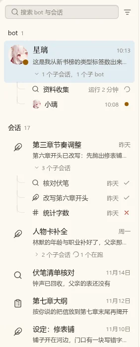
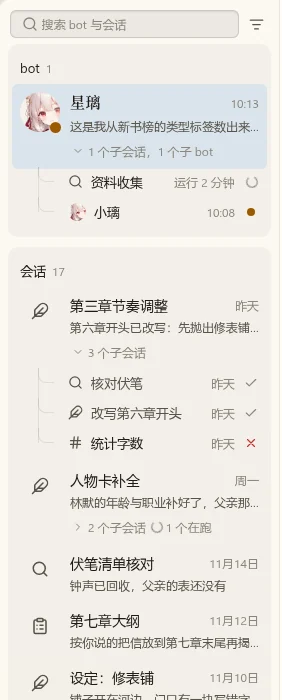

第 3 轮：导航的样式（改）
导航改成哪种样式？
推荐 A：侧栏本身已经是一块面，再给每组套一块浅底就多了一层；分组靠组头的名字与数量就够。
A 安静的组头加连接线

组头悬停时出现收起与新建；子项右边是状态：转圈在跑、黄点等你、勾已完成、叉出错。
B 每组一块浅底

组与组分得更开；子项的画法同 A。
直接修，不用答
| 哪里 | 改成什么 |
|---|---|
| “还有 12 个会话” | 去掉，列表滚到底自动加载更多（第 2 轮） |
| 过滤（全部、bot、会话） | 第 2 轮的蓝色分段条太抢眼，收成搜索框右边的过滤按钮 |
已定
- bot 的视图是 IM 式：左边是聊天与群聊，右边是聊天界面（开发者 2026-11-18）
- 注意力顺序：先看最新的对话与输入框；等你处理的事贴在输入框上方；日程与记忆默认收起；关着时只剩头像加未读气泡；不自动收起
- 左栏放会话；bot 与会话合并成一个“消息”视图，取代现在的会话面板与 Agent 对话视图；对话本身用同一个组件（第 1 轮）
- 放在侧栏；多开放到最后，倾向做成侧栏视图能开多个（第 1 轮）
- 侧栏窄时用头像列加抽屉（第 2 轮）
- 导航的排法：搜索与过滤在顶上、bot 与会话分组、子会话挂在父的下面（第 2 轮）；分组保留，只改样式（第 3 轮）